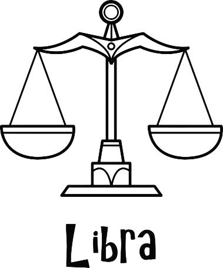

Info:
Ο Ζυγός (♎) είναι αστρολογικό ζώδιο, το οποίο συνδέεται με τον αστερισμό του Ζυγού. Σύμφωνα με τον τροπικό ζωδιακό, ο Ζυγός καταλαμβάνεται
από τον Ήλιο
από 23 Σεπτεμβρίου μέχρι 22 Οκτωβρίου. Το ζώδιο απέναντι από το Ζυγό είναι ο Κριός. Μυθολογικά ο Ζυγός σχετίζεται με τη Θεά Δίκη και με την Νέμεσις.

Προσωπικότητα και Συμπεριφορά: Ο Ζυγός έχει έμφυτο καλό γούστο, αγαπάει τις τέχνες, την αισθητική και θέλει ο χώρος γύρω του να είναι όμορφος και ήρεμος. Αποστρέφεται τις εντάσεις και τους καβγάδες. Θεωρείται το ζώδιο των σχέσεων. Αναζητά το "έτερόν του ήμισυ" και δένεται συναισθηματικά. Δένεται αρμονικά με άλλα ζώδια του Αέρα (Δίδυμοι, Υδροχόος) και της Φωτιάς (Κριός, Λέων, Τοξότης). Για να γοητεύσετε έναν Ζυγό, απαιτείται έξυπνο φλερτ και καλή συζήτηση. Αποφεύγει τις εντάσεις και προτιμά τον διάλογο. Είναι πρόθυμος να κάνει υποχωρήσεις για να διατηρήσει την ειρήνη, αρκεί να νιώθει ότι υπάρχει αμοιβαιότητα.